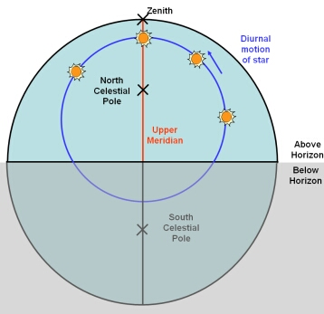
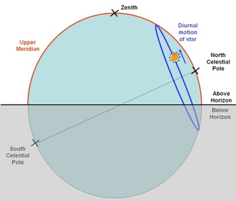

A meridian transit occurs when an object moves across the meridian – an imaginary great circle on the celestial sphere that passes through the celestial poles and an observer’s zenith.
|

The upper meridian passing through the north and south celestial poles, and the observer’s zenith. This view is looking from the south towards the north for an observer in the Northern Hemisphere. An upper meridian transist occurs when the celestial object (in this case a star) crossed the upper meridian.
|

The same situation as in the diagram to the left, but viewed from the east looking towards the west for an observer in the Northern Hemisphere.
|
A meridian transit can be classified as either an:
- Upper meridian transit: the celestial object moves across the upper meridian, the semi-circle above the observer’s horizon.
- Lower meridian transit: the celestial object moves across the lower meridian, the semi-circle below the observer’s horizon.
Meridian transits are used for timekeeping, as local noon is defined as the time when Sun undergoes an upper meridian transit. An apparent solar day is the length of time between two successive upper meridian transits of the Sun. Local midnight occurs when the Sun undergoes a lower meridian transit.
A transit telescope is used to accurately measure when a meridian transit occurs.